Configurer un switch Netgear GS108T#
Pour commencer, branchez le switch au courant et attendez que tous les témoins lumineux au-dessus des ports Ethernet s’éteignent.
Si au cours de ce guide vous faites une erreur qui aurait pour effet de vous déconnecter du switch et que vous ne pouvez ensuite plus y accéder, il est toujours possible de réinitialiser ce dernier en appuyant sur le bouton Factory Defaults (petit trou à la droite du switch). Vous devrez alors tout reprendre depuis le départ.
Accès au switch#
Désactivez tout d’abord votre wifi s’il est actif.
Branchez ensuite un câble ethernet depuis le port “1” du switch (celui qui est en jaune) jusqu’à votre ordinateur.
Ensuite, allez dans Préférences Système > Réseau.
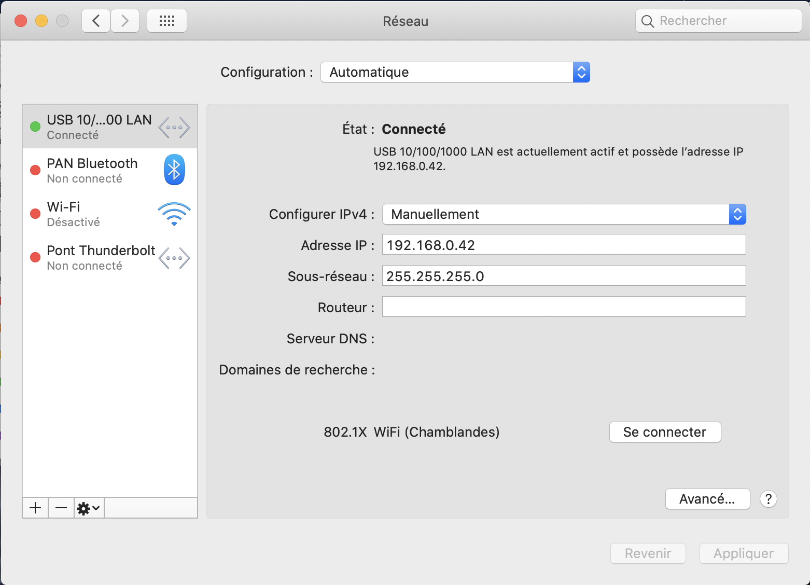{kind=link}
Configurez le réseau ethernet comme sur l’image ci-dessus.
Configurer IPv4: Manuellement
Adresse IP: 192.168.0.X
Note
Le X est un nombre (entre 0 et 255) qui n’est encore assigné à auncun objet sur le réseau local.
Sous-réseau: 255.255.255.0
Appuyez ensuite sur Appliquer.
Ouvrez ensuite un navigateur et tapez l’adresse IP du switch dans la barre de recherche. Par défaut cette adresse est : 192.168.0.239.
Vous devriez tomber sur la page suivante :
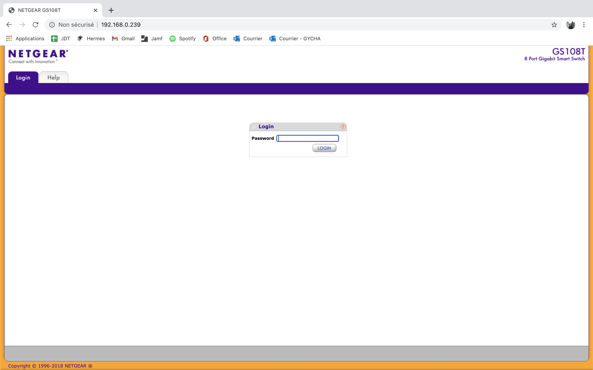{kind=link}
Le mot de passe par défaut de ce modèle est : password.
Si vous tombez sur la page suivante, c’est que tout fonctionne :

System Information#
Dans la page d’accueil, complétez le formulaire System Information.
Dans System Name, mettez le nom que vous voulez tout comme System Location. Les autres champs n’ont pas besoin d’être complétés.
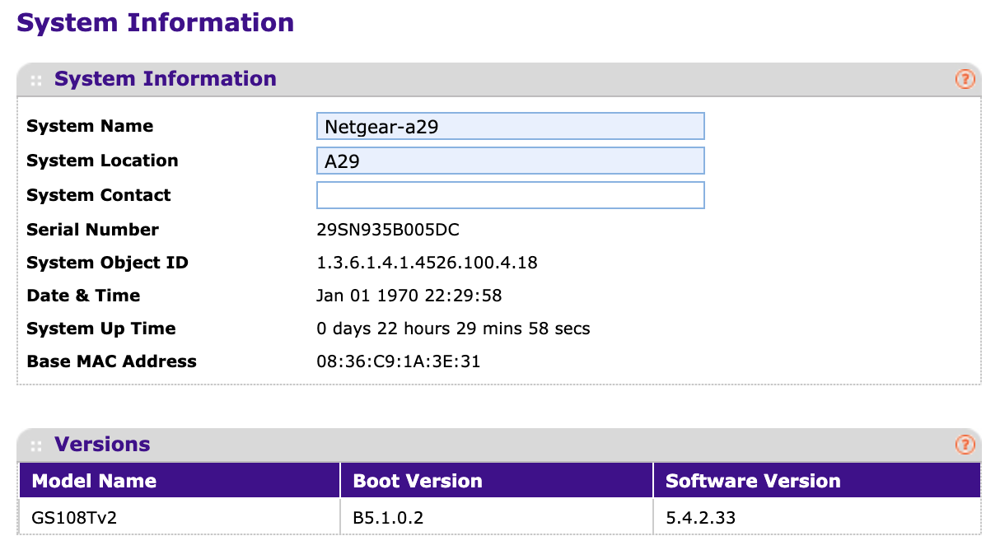{kind=link}
VLAN Configuration#
Allez ensuite dans l’onglet Switching > VLAN.

Vous devez ensuite ajouter 4 lignes dans le tableau de VLAN Configuration:
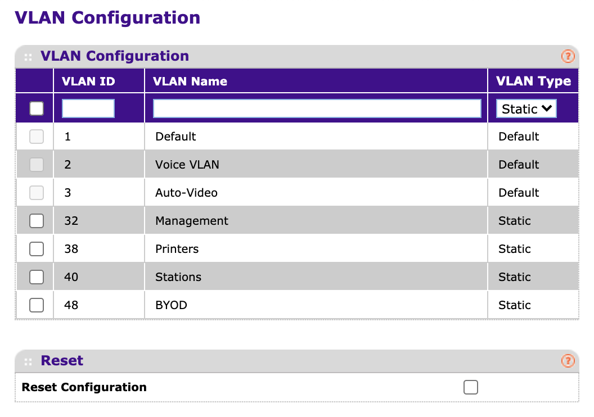{kind=link}
Pour ajouter une ligne, entrez l’ID du nouveau VLAN dans VLAN ID, puis son nom dans VLAN Name. Le VLAN Type doit être laissé en “Static”. Une fois que c’est fait, il suffit d’appuyer sur le bouton “Add” tout en bas à droite de la page.

Rajoutez donc ces quatres lignes:
# |
VLAN ID |
VLAN Name |
|---|---|---|
1 |
32 |
Management |
2 |
38 |
Printers |
3 |
40 |
Stations |
4 |
48 |
BYOD |
VLAN Membership#
Allez ensuite dans Advanced > VLAN Membership, comme suit:
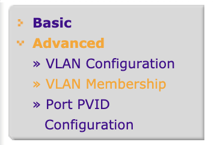{kind=link}
Dans cette page, vous pouvez configurer quel VLAN est reconnu par quel port du switch:
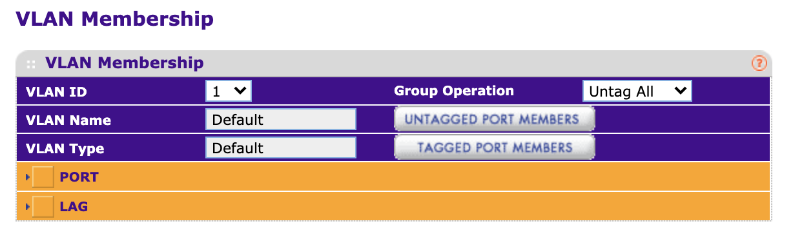{kind=link}
Je peux prendre n’importe quel VLAN qui à été créé auparavant et le configurer de telle manière à ce que certains ports reconnaissent ce VLAN en tagged ou en untagged. Par exemple, voici une configuration possible du port 48:
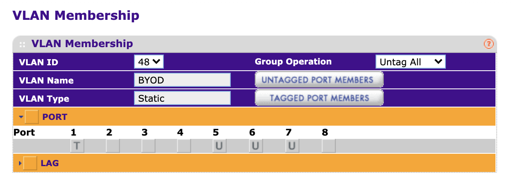{kind=link}
Dans cet exemple, le premier port tag (tagged → T) le VLAN et les ports 5, 6 et 7 ne le tag pas (untagged → U). Les ports 2, 3, 4 et 8 ne reconnaissent donc pas du tout le VLAN.
Ainsi, vous pouvez configurer quels VLAN passera dans quel port. De manière générale, tous les VLAN seront en tagged dans le premier port et en untagged dans les ports spécifiques dans lesquels ils passeront.
Exemple de configuration VLAN Membership#
Dans cet exemple, les ports 2 à 4 donnent du VLAN 40, les ports 5 à 7 du VLAN 48 et le port 8 du VLAN 38. Comme dis précédemment, tous les VLAN sont donnés par le premier port, en tagged, contrairement aux autres ports ou le VLAN est en untagged.
VLAN ID |
Name↓ Ports→ |
1 |
2 |
3 |
4 |
5 |
6 |
7 |
8 |
|---|---|---|---|---|---|---|---|---|---|
32 |
Management |
T |
|||||||
38 |
Printers |
T |
U |
||||||
40 |
Stations |
T |
U |
U |
U |
||||
48 |
BYOD |
T |
U |
U |
U |
Exemple de configuration VLAN Membership#
Dans cet exemple, seul le VLAN 40 est donné par tous les ports.
VLAN ID |
Name↓ Ports→ |
1 |
2 |
3 |
4 |
5 |
6 |
7 |
8 |
|---|---|---|---|---|---|---|---|---|---|
32 |
Management |
T |
|||||||
38 |
Printers |
T |
|||||||
40 |
Stations |
T |
U |
U |
U |
U |
U |
U |
U |
48 |
BYOD |
T |
Port PVID Configuration#
Ensuite, dans Port PVID Configuration, il est question de définir quels VLAN passera part quel port. Cette étape peut ressembler à l’étape précédente, mais elle est toutefois nécessaire.
Allez tout d’abord dans Port PVID Configuration :
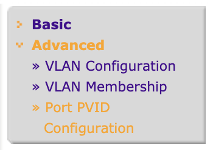{kind=link}
Ensuite, il s’agit de modifier les lignes afin de définir le VLAN que donnera chaque port. Une ligne peut-être modifiée en cliquant sur le carré à sa gauche, ensuite, l’ID peut être modifié à celui correspondant:
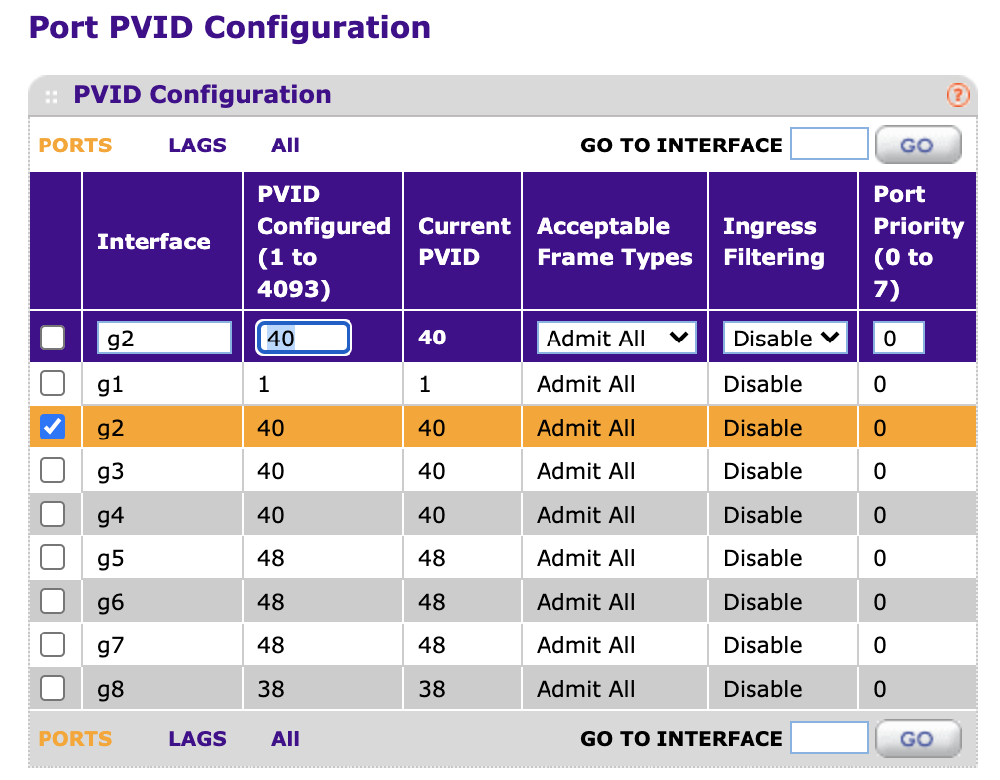{kind=link}
Une fois que l’ID est entré, cliquez sur Apply.
Tip
Il est possible de modifier plusieures lignes en une fois.
Faites bien attention à garder la 1ère ligne avec le PVID 1, et à ne pas mettre le PVID 32.
Le résultat final pourrait ressembler à cela :
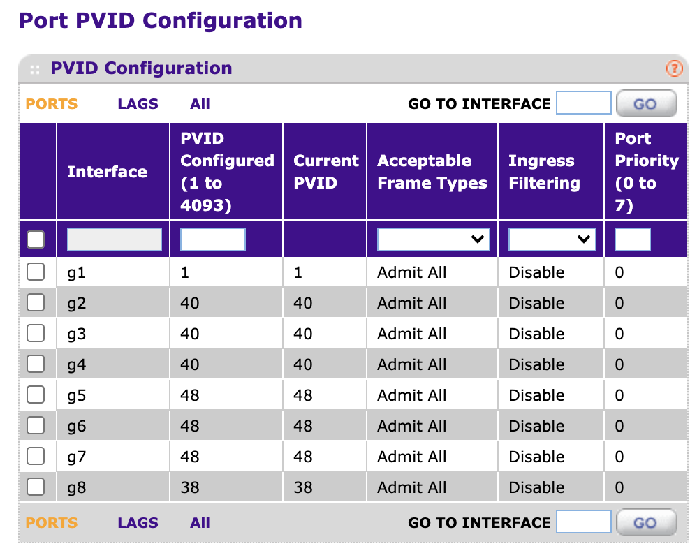{kind=link}
IP Configuration#
Enfin, la dernière chose qu’il reste à faire est de configurer l’adresse IP finale du switch, son masque de sous-réseau, son gateway ainsi que son port de management.
Pour ce faire, allez dans l’onglet System, puis IP Configuration :
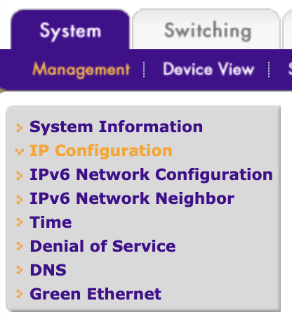{kind=link}
Changez la configuration de Dynamic IP Adress à Static IP Adress.
Complétez ensuite le formulaire, l’image suivante est un exemple correct :
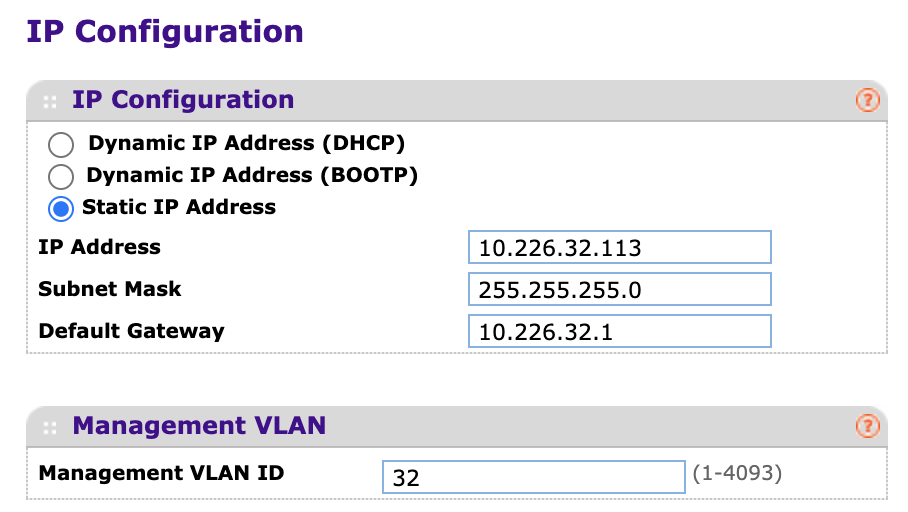{kind=link}
Pour le champ IP Adress, une adresse IP pas encore utilisée sur le réseau doit être entrée. Pour voir tous les objets sur le réseau, vous pouvez aller sur http://ipam.dgep.edu-vaud.ch.
Pour le champ Subnet Mask, mettez 255.255.255.0.
Pour le champ Default Gateway, l’IP du gateway doit être mise, sur ce réseau elle est 10.226.32.1.
Enfin, pour le champ Management VLAN ID, mettez 32.
Cliquez enfin sur Apply.
Verification#
Une fois que vous avez cliqué sur Apply, le switch ne devrait plus répondre. Pour vérifier qu’il a bien été configuré correctement, branchez le port de management du switch au réseau (le port trunk d’un autre switch par exemple). Il est ensuite normalement possible de se connecter à ce switch si son adresse ip est entrée dans un navigateur. L’ordinateur doit évidemment être connecté au même réseau.
Sécurité / mot de passe#
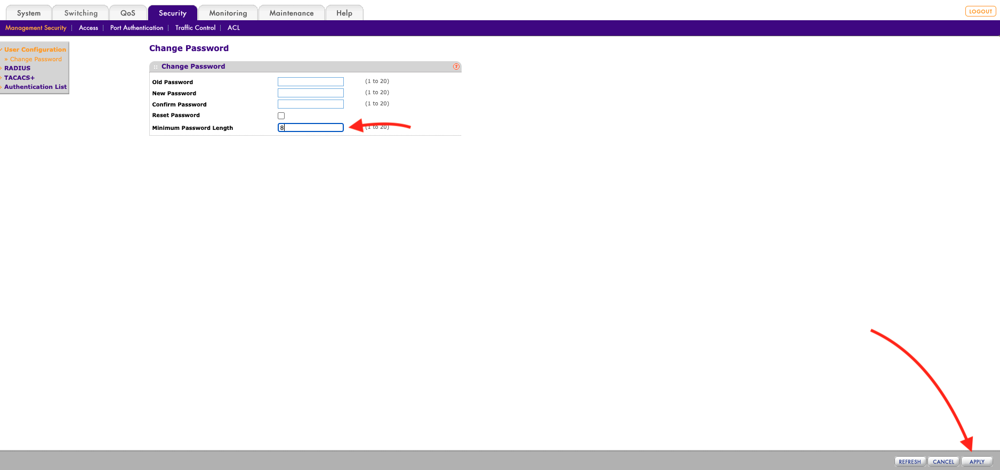Pour changer le mot de passe aller sur l’onglet security puis remplisser les champs qu’ils demande. Actuellement le mot de passe que nous utilison pour les switch netgear est le suivant : Gym_09 Donc il faut changer la taille minimal du password et la mettre a 6.
{kind=link}
Attention
Ne pas oubliez de cliquer sur apply en bas a droite.